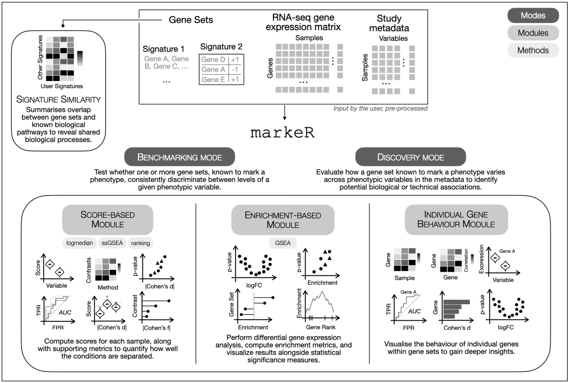

To cite markeR please use:
Martins-Silva R, Kaizeler A, Barbosa-Morais N (2025). markeR: an R Toolkit for Evaluating Gene Sets as Phenotypic Markers. Gulbenkian Institute for Molecular Medicine, Faculdade de Medicina, Universidade de Lisboa, Lisbon, Portugal. R package version 0.99.0, https://github.com/DiseaseTranscriptomicsLab/markeR.
markeR provides a suite of methods for using gene sets (signatures) to quantify and evaluate the extent to which a given gene signature marks a specific phenotype from gene expression data. The package implements various scoring, enrichment and classification approaches, along with tools to compute performance metrics and visualize results.

Table of Contents
Installation
The user can install the development version of markeR from GitHub with:
# install.packages("devtools")
devtools::install_github("DiseaseTranscriptomicsLab/markeR")Common Workflow
markeR provides a modular pipeline to quantify transcriptomic signatures and assess their association with phenotypic or clinical variables. The typical workflow includes the following steps:
1. Input Requirements
Depending on the analysis mode, inputs vary slightly.
-
Gene Set(s):
A named list where each element represents one gene set:- Use a character vector for gene sets where direction of enrichment is not known.
- Use a data frame with gene names and a directionality column (
-1for down-regulated,+1for up-regulated)
This structure supports both Discovery Mode (single gene set) and Benchmarking Mode (multiple gene sets).
# Example
gene_sets
#> $Set1
#> [1] "GeneA" "GeneB" "GeneC" "GeneD"
#>
#> $Set2
#> gene direction
#> 1 GeneX 1
#> 2 GeneY -1
#> 3 GeneZ 1-
Expression Data Frame:
A filtered and normalised gene expression data frame (genes × samples). Row names must be gene identifiers, and column names must match the sample IDs in the metadata.
head(expr_df)
#> Sample1 Sample2 Sample3 Sample4 Sample5
#> GeneA 3.879049 7.448164 2.864353 5.852928 3.610586
#> GeneB 4.539645 5.719628 4.564050 4.409857 4.584165
#> GeneC 8.117417 5.801543 2.947991 6.790251 2.469207
#> GeneD 5.141017 5.221365 3.542218 6.756267 9.337912
#> GeneX 5.258575 3.888318 3.749921 6.643162 7.415924
#> GeneY 8.430130 8.573826 1.626613 6.377281 2.753783-
Sample Metadata:
A data frame with annotations for each sample, with the sample ID in the first column. The row names must match the column names of the expression matrix.
metadata
#> SampleID Condition Age
#> 1 Sample1 Control 49
#> 2 Sample2 Treatment 44
#> 3 Sample3 Control 46
#> 4 Sample4 Treatment 49
#> 5 Sample5 Control 382. Select Mode of Analysis
Discovery Mode: Explore how a single, well-characterised gene set relates to a specific variable of interest. Suitable for hypothesis generation or signature projection.
Benchmarking Mode: Evaluate one or more gene sets against multiple metadata variables using a standardised scoring and effect size framework. This mode provides comprehensive visualisations and comparisons across methods.
3. Choose a Quantification Approach
markeR supports two complementary strategies for quantifying the association between gene sets and phenotypes:
3.1 Score-Based Approach
This strategy generates a single numeric score per sample, reflecting the activity of a gene set. It enables flexible downstream analyses, including comparisons across phenotypic groups.
Three scoring methods are available:
Log2-median: Calculates the median log2 expression of the genes in the set. Sensitive to absolute shifts in expression.
Ranking: Ranks all genes within each sample and averages the ranks of gene set members. Captures relative ordering rather than magnitude.
ssGSEA: Computes a single-sample gene set enrichment score using the ssGSEA algorithm. Reflects the coordinated up- or down-regulation of the set in each sample.
These methods vary in assumptions and sensitivity. Robust gene sets are expected to perform consistently across all three.
3.2 Enrichment-Based Approach
This approach uses a classical gene set enrichment analysis (GSEA) framework to evaluate whether the gene set is significantly overrepresented at the top or bottom of a ranked list of genes (e.g., ranked by fold change or correlation with phenotype).
- GSEA: Computes a Normalised Enrichment Score (NES) for each contrast or variable of interest, adjusting for gene set size and multiple testing.
Use this approach when interested in collective behaviour of gene sets in relation to ranked differential signals.
4. Visualisation and Evaluation
In Benchmarking Mode, markeR offers a range of visual summaries:
- Violin or scatter plots showing score distributions by phenotype
- Volcano plots and heatmaps based on effect sizes (Cohen’s d or f)
- ROC curves and AUC values
- Null distribution testing using random gene sets matched for size and directionality
In Discovery Mode, the output focuses on a single gene set:
- Score distributions by phenotype
- Pairwise contrasts (Cohen’s d) and overall effect sizes (Cohen’s f)
- Enrichment score summaries (NES) with adjusted p-values (e.g., lollipop plots)
Benchmarking mode offers the most comprehensive set of features and allows users to seamlessly move from discovery to benchmarking mode once a variable of interest has been identified and further testing is required. The main difference from Discovery mode is that Benchmarking is designed to evaluate multiple gene sets simultaneously, whereas Discovery mode focuses on quantifying a single, robust gene set.
5. Individual Gene Exploration (Optional)
To better understand the contribution of individual genes within a gene set and identify whether specific genes drive the overall signal, markeR offers a suite of gene-level exploratory analyses, including:
- Expression heatmaps of genes across samples and groups
- Violin plots showing expression distributions of individual genes
- Correlation heatmaps to reveal co-expression patterns among genes in the set
- ROC curves and AUC values for individual genes to evaluate their discriminatory power
- Effect size calculations (Cohen’s d) per gene to quantify differential expression
- Principal Component Analysis (PCA) on gene set genes to assess variance explained and sample clustering
6. Compare with Reference Gene Sets (Optional)
markeR allows comparison of user-defined gene sets to reference sets (e.g., from MSigDB) using:
Jaccard Index: Measures gene overlap relative to union size.
Log Odds Ratio (logOR): Computes enrichment using a user-defined gene universe and Fisher’s exact test.
Filters can be applied based on similarity thresholds (e.g., minimum Jaccard, OR, or p-value).
📩 For any questions or concerns, feel free to reach out:
Rita Martins-Silva
Email: rita.silva@gimm.pt